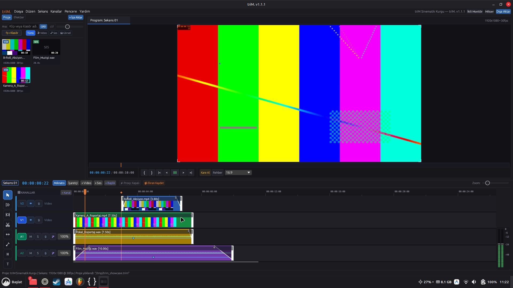
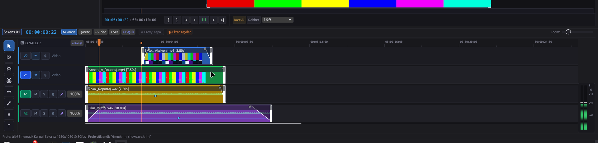
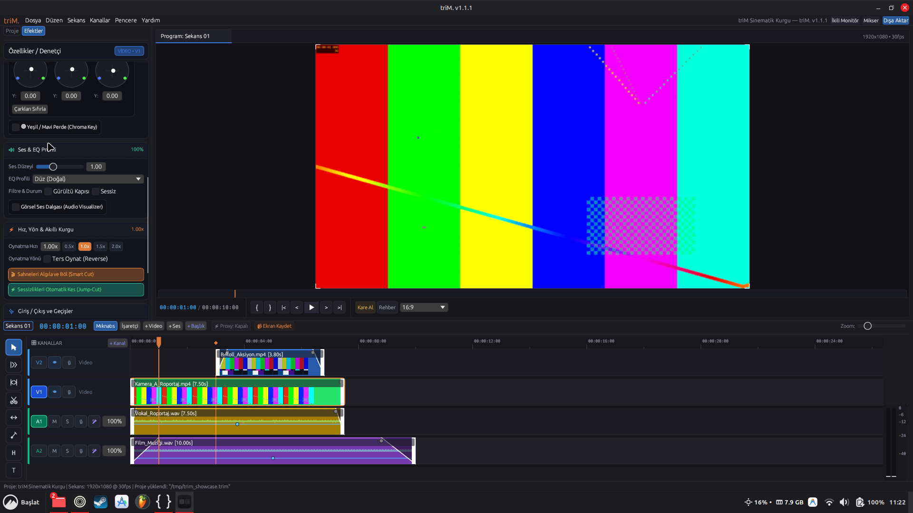
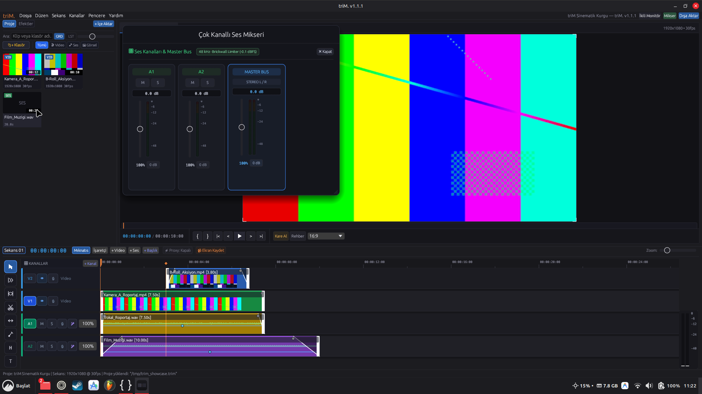
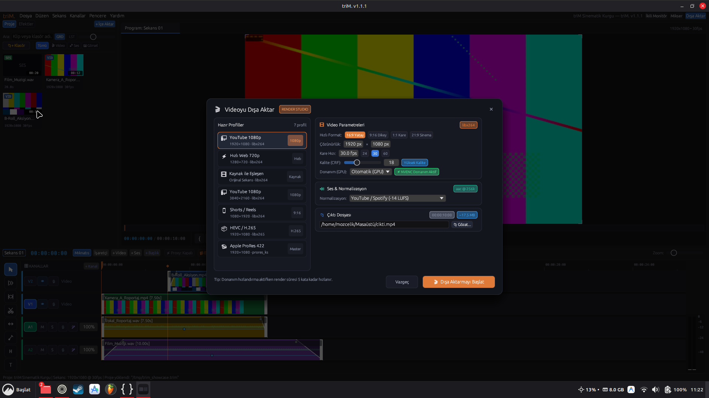
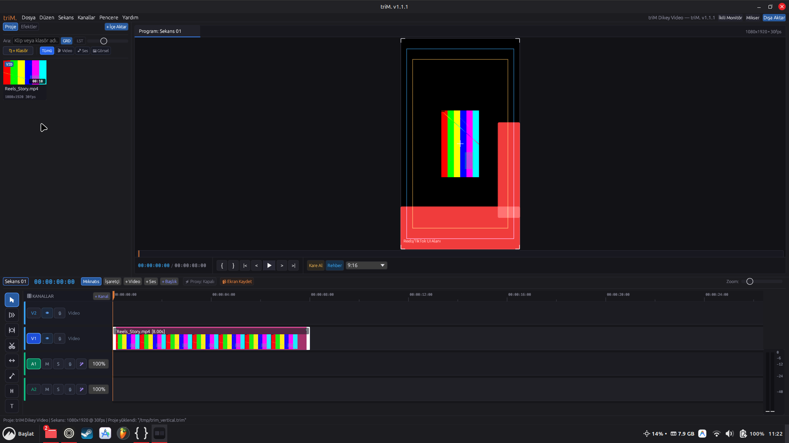
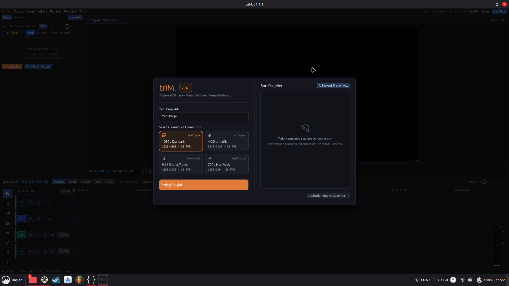

Hafif, yerel ve doğrudan.
triM, arayüzü egui ile doğrudan çizilen, medya çözümleme ve kodlama için sistemdeki FFmpeg araçlarını kullanan, 13 MB boyutunda yerel bir masaüstü video düzenleyicisidir. Tarayıcı motoru, Electron veya bulut bağımlılığı içermez.

İhtiyaç duyulan kurgu araçları, doğrudan yerel kodla.
Ağır kurulum paketleri ve karmaşık menüler yerine doğrudan kurguya odaklanan modüler araçlar.
Kurgu ve Zaman Çizgisi
Yerel- Çok kanallı video ve ses zaman çizgisi (V1..Vn, A1..An)
- Jilet (Razor), Dalgalanma (Ripple), Kaydırma (Slip) ve Hız Uzatma araçları
- Oynatma kafasına ve klip kenarlarına manyetik kenetlenme (Snapping)
- Akıllı video-ses eşleştirmesi (V1 → A1, V2 → A2) ve otomatik bağlama
- Zaman çizgisi üzerinde renkli görsel işaretçiler (Markers)
Renk ve Görsel Efektler
3D LUT- 3 yönlü renk çarkları (Lift, Gamma, Gain) ile tonlama
.cubeformatında 3D LUT uygulama ve hazır renk profilleri- Chroma Key (yeşil ve mavi perde renk anahtarlama)
- Opaklık geçişleri (fade-in, fade-out) ve katman harmanlama
- Konum, ölçek, döndürme ve opaklık için anahtar kareler (Keyframes)
Çok Kanallı Ses Mikseri
48 kHz- 48 kHz stereo gerçek zamanlı yazılımsal PCM ses mikseri
- Kanal bazlı kazanç (dB), sessize alma (Mute) ve solo dinleme
- 3 bant parametrik ekolayzır ve ses hazır ayarları (vokal netliği, bas)
- Doğrudan zaman çizgisine mikrofonla seslendirme kaydı (Voiceover)
- Çıkışta kırpılmayı önleyen tuğla duvar sınırlayıcı (Lookahead Limiter)
Dışa Aktarma ve Standartlar
GPU Hızlandırma- H.264, HEVC, VP9, AV1, ProRes ve DNxHR formatlarında render
- Donanım hızlandırma tespiti (NVENC, Intel QSV, AMD AMF, Linux VAAPI)
- EBU R128 standardında entegre ses normalizasyonu (
loudnorm) - Final Cut Pro (
.fcpxmlv1.8/v1.9) ve CMX 3600 (.edl) aktarımı - 9:16 Dikey kurgu modu ve güvenli alan çizgileri (Reels / Shorts)
Gerçek Çalışma Alanı Görünümleri
Uygulamanın v1.1.2 sürümünden doğrudan alınan ekran görüntüleri. Büyütmek için tıklayın.






Kurulum Seçenekleri
Hazır paketleri indirin veya kaynak kodundan tek komutla derleyin.
Gereksinimler: 64-bit Linux veya Windows, OpenGL 3.3+ grafik desteği, sistemde kurulu ffmpeg ve ffprobe.
Linux Tek Satır Kurulum:
Paket İndirmeleri:
GitHub Sürümler Sayfası (.deb, .rpm, .AppImage, .zip) ↗
Kaynaktan Derleme:
Modüler Rust Mimarisi
triM, sorumlulukların ayrıldığı 8 bağımsız Cargo crate'inden oluşur.
| Crate | Sorumluluk |
|---|---|
trim-core | Zaman hesabı, klip, kanal, proje modelleri ve bellek sınırları (LruCache) |
trim-commands | Geri alınabilir (Undo/Redo) komut nesneleri ve komut yığını |
trim-timeline | Zaman çizgisi kurgu algoritmaları, kesim noktası tespiti |
trim-project | Atomik dosya kaydetme (.trim), otomatik yedekleme ve kurtarma |
trim-media | FFmpeg alt süreç yöneticisi, asenkron kare çözümleme, PCM ses mikseri |
trim-export | FFmpeg filtergraph derleyicisi, EDL ve FCPXML aktarımı |
trim-ui | egui arayüzü, zaman çizgisi çizimi, monitörler ve denetçi paneli |
trim-app | Masaüstü çalıştırılabilir ikili giriş noktası |
Açık ve Dürüst Teknik Detaylar
- Önizleme Çözünürlüğü: Zaman çizgisi önizlemesi CPU üzerinde ölçeklenerek 640x360 çözünürlükte işlenir ve OpenGL dokusu olarak yüklenir. Çok sayıda eşzamanlı katman içeren sahnelerde CPU kullanımı artabilir.
- Alt Süreç Tabanlı Medya Hattı: C kütüphanelerini doğrudan bağlamak yerine sistemdeki FFmpeg izole bir alt süreç olarak çalıştırılır. Bu tercih arayüz çökmesini önler; ancak uzun GOP aralığına sahip dosyalarda ilk arama sırasında 15-40 ms civarında gecikme olabilir. Akıcı kurgu için proxy modu önerilir.
- Platform Kapsamı: Mikrofonla ses kaydı (Voiceover) ve ekran kaydı şu anda Linux'a özgüdür. Windows derlemesinde temel ses oynatımı ffplay üzerinden çalışır; doğrudan mikrofon kaydı henüz Windows'ta desteklenmemektedir.
- Renk Derinliği: Önizleme 8-bit sRGB alanında çalışır. 10-bit HDR kaynak medyalar önizleme sırasında 8-bite indirgenir; nihai render FFmpeg motoru üzerinden tam bit derinliğinde dışa aktarılır.